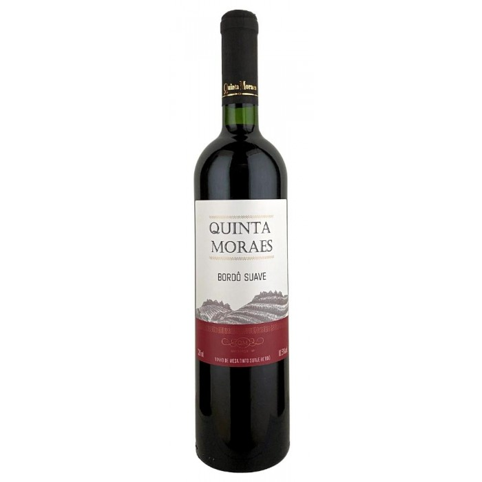
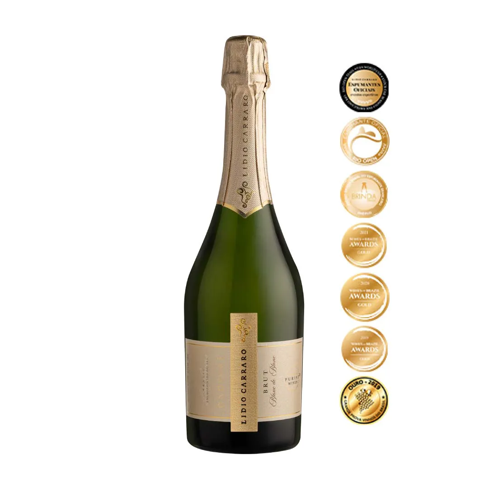
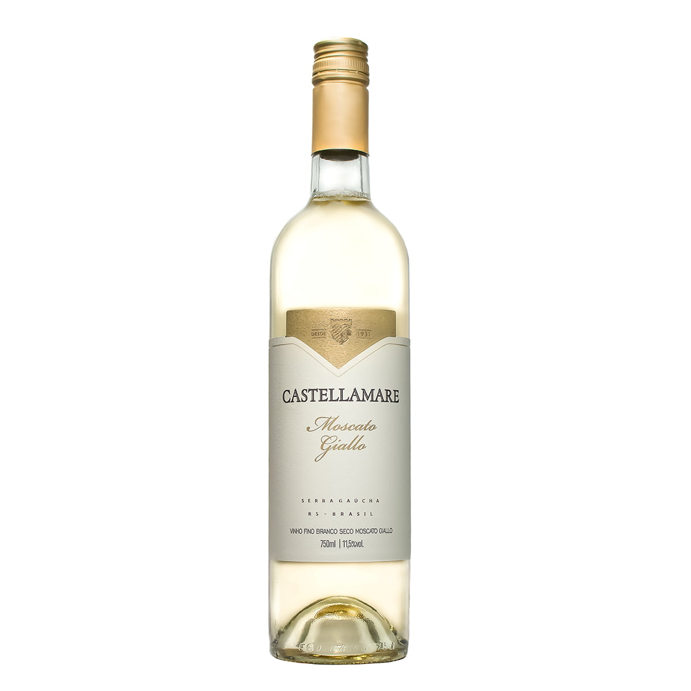

Tipos de vinhos e ocasiões




| Tipo | Características | Harmonização | Ocasião |
|---|---|---|---|
| Tinto | Encorpado e intenso | Carnes, massas | Jantar |
| Branco | Leve e refrescante | Peixes, frutos do mar | Almoço |
| Rosé | Leve e frutado | Salada, massas leves | Reuniões |
| Espumante | Refrescante e delicado | Entradas, sobremesas | Celebrações |
| Doce | Maior percepção de doçura | Sobremesas | Momentos especiais |
| Semisseco | Equilíbrio entre doce e seco | Diversos pratos | Diferentes ocasiões |
| Fortificado | Maior teor alcoólico | Sobremesas e queijos | Ocasiões especiais |